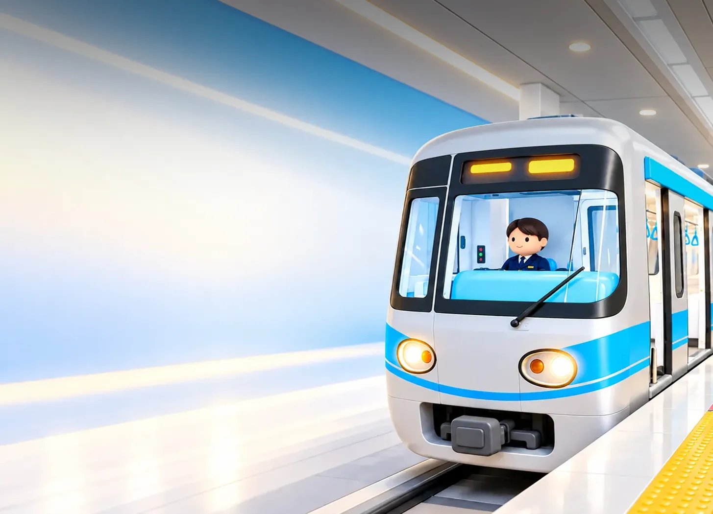
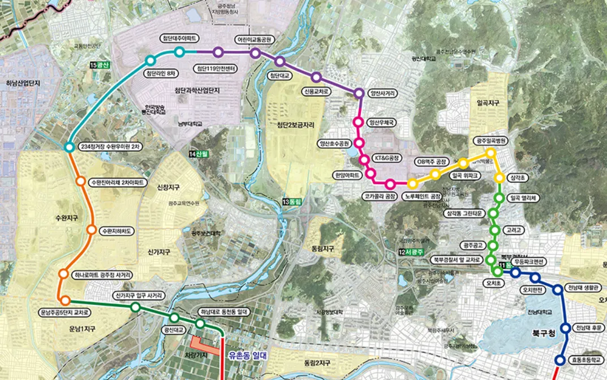
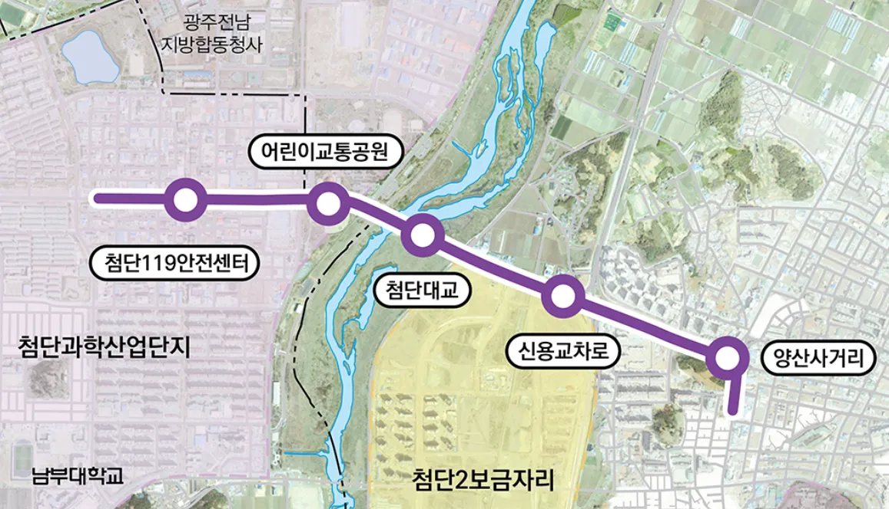
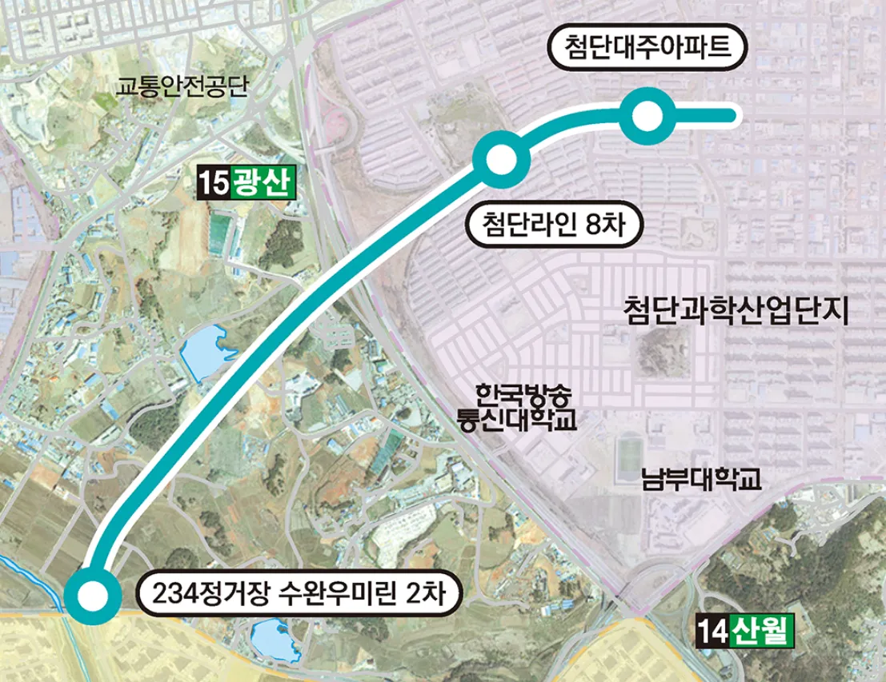
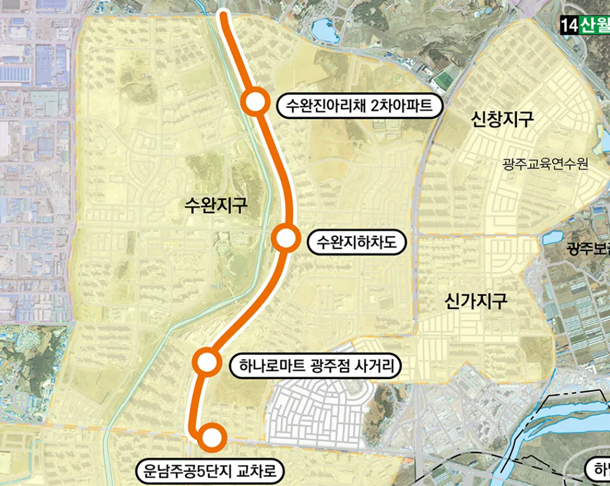
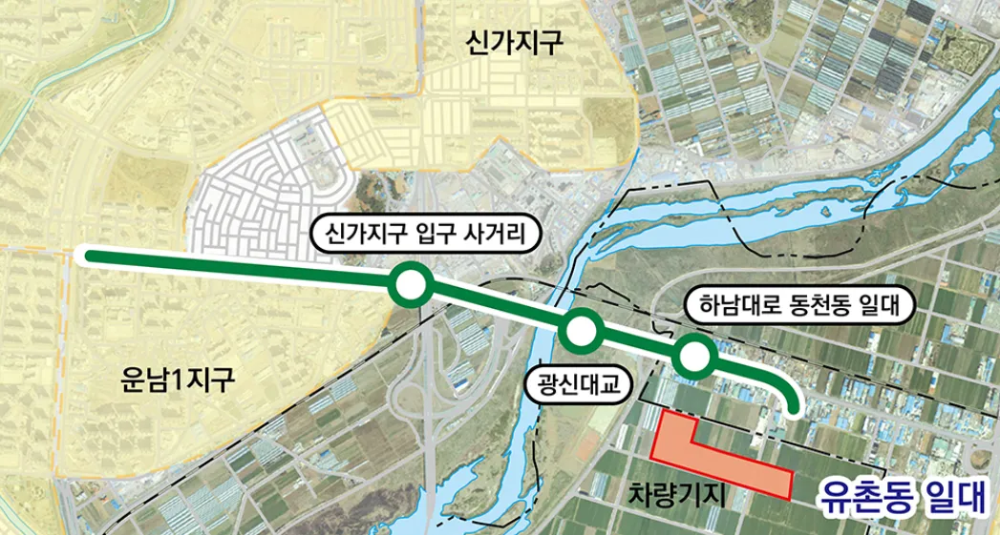

전남광주통합특별시
모두의전남광주
광주 도시철도 2호선 개통 늦어져서 속상하시죠? 시민 여러분의 오랜 관심사인 광주 도시철도 2호선이 부분개통을 발표했습니다. 현재 건설 공정에 대한 철저한 조사를 통해 개통 시기를 최대한 앞당기는 한편 가능한 곳은 먼저 개통해 시민의 불편을 최소화할 계획인데요. 도시철도 2호선 개통, 무엇이 어떻게 달라지는지 Q&A로 정리해 봤어요.
도시철도건설본부는 감리단과 전문가 등이 참여한 진단전담팀(TF)을 통해 도시철도 2호선 공정을 면밀히 검증했어요. 그 결과 개통 연기가 불가피해졌습니다.
그동안 도시철도 2호선 토목공사는 암반·지장물 등 현장여건으로 인해 지연되고 있었어요. 이에 따라 건축·기계·전기 등 후속 공정도 영향을 받아왔습니다. 토목 이후 시험운행까지 연결한 공정관리가 충분하지 못했던 것으로 확인되어 개통에 영향을 미쳤습니다.
2단계 전 구간 개통은 2035년 12월로 예상되지만 시민들이 도시철도를 보다 빨리 이용할 수 있도록 부분개통을 결정했어요.





범례
출처: 전남광주통합특별시 누리집
다만 부분개통은 운행계획 변경과 총사업비 증가가 수반되는 기본계획 변경사항으로 향후 중앙부처와의 협의 등을 거쳐 추진 여부를 확정할 계획이에요.
시민불편사항이었던 도로 개방의 경우 1단계는 전 구간 개방이 완료된 상황입니다. 2단계 우선 개통 구간은 2030년 상반기까지 개방을 마무리할 예정이니 시민 여러분의 너른 양해를 부탁드려요.
총사업비는 약 1조 5,036억원이 증가할 것으로 예상되는데요. 가장 큰 이유는 물가 상승이에요. 최초 총사업비 조사 후 현재까지 16년간 물가 상승률에 따라 공사비가 증가하는 부분이 가장 컸어요.
통합특별시는 앞으로 공사기간 연장과 물가 상승 등을 반영해 전 구간 개통에 필요한 사업비를 단계적으로 재검토하고, 실제 공정에 맞춰 연차별 투자계획을 합리적으로 재조정할 방침이에요.
이와 함께 실제 남은 공정을 기준으로 개통 시점까지의 전체 과정을 통합 관리하고, 개통 일정에 직접적인 영향을 미치는 핵심 공정을 집중관리해 공정 지연을 최소화할 것입니다.
또 매월 공정 진행 상황을 발표하고, 개통 준비 과정도 단계별로 상세히 안내하는 등 사업 추진 현황도 시민에게 투명하게 공개할 예정이니 지켜봐 주세요.